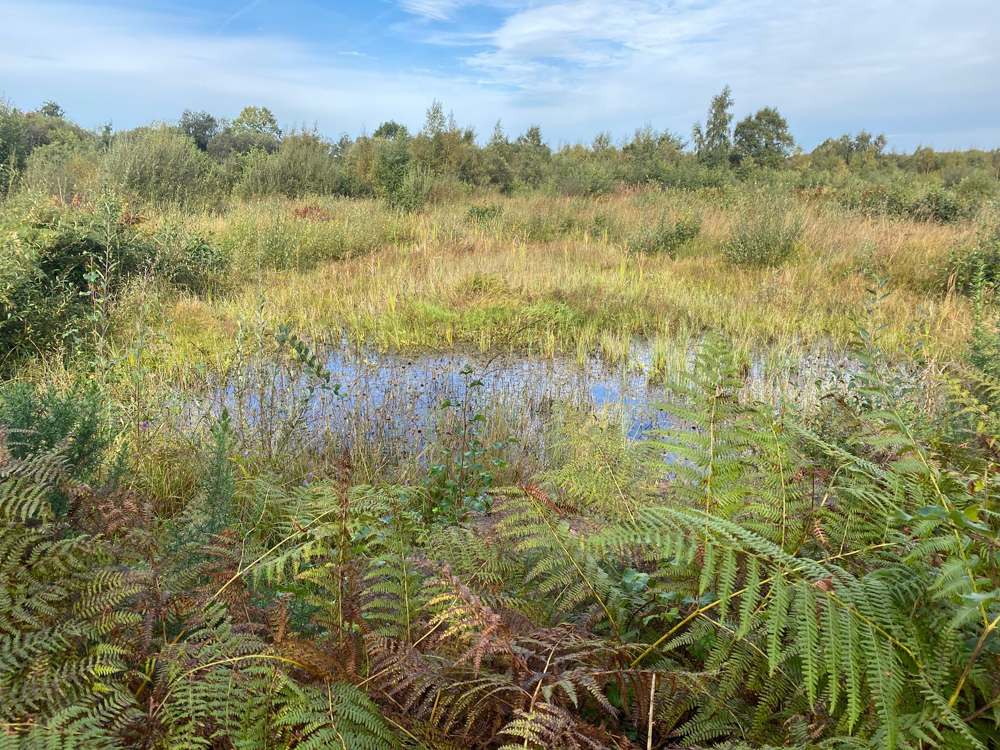
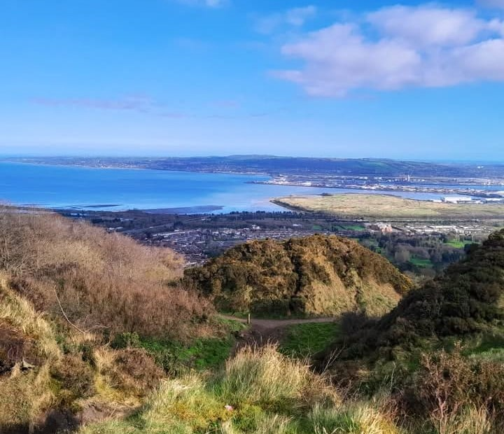
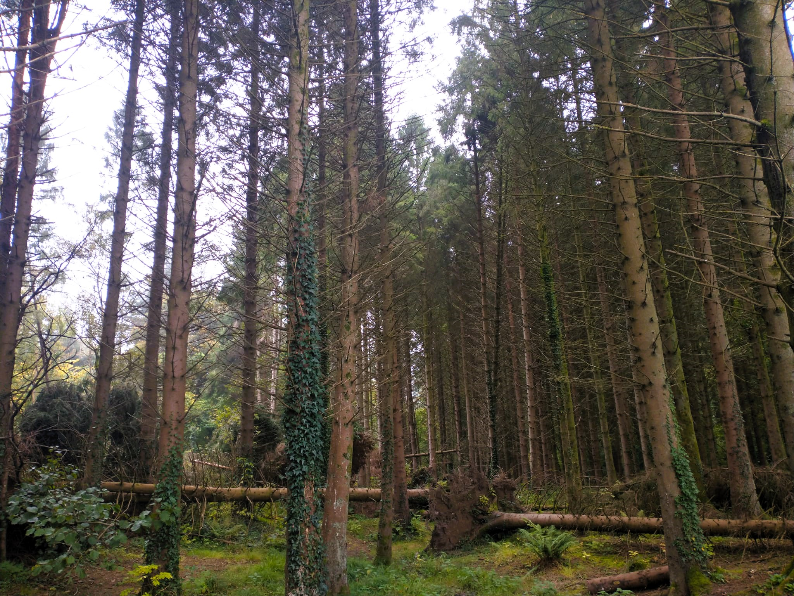
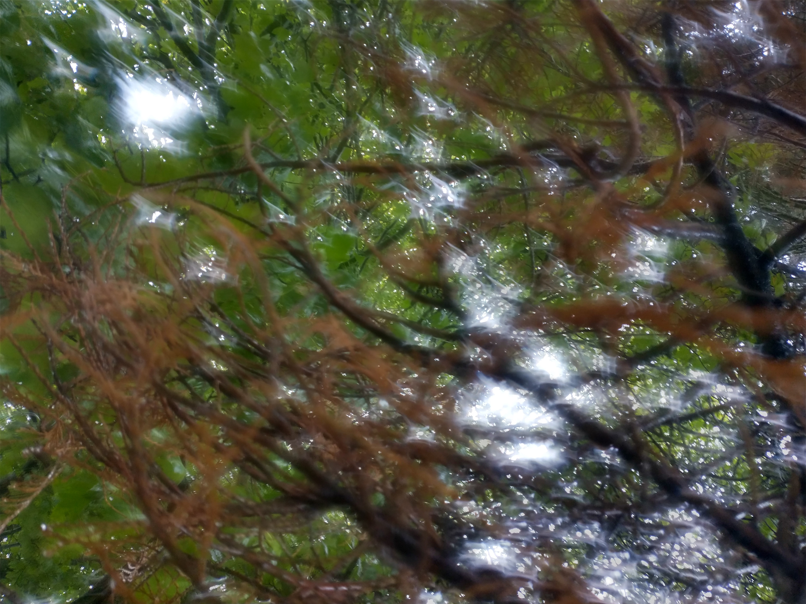

locations
this section contains information about specific locations related to forest bathing.
any forest close to home can be a place to wander and take in the beauty and harmony of nature
brackagh moss, portadown
brackagh moss is a wet forest, known traditionally for its turf cutting
the forest here is composed of a peat bog interdisposed with willow and alder trees
the area is a designated nature reserve, and harbours a wealth of wildlife species and natural beauty

cave hill park, belfast
cave hill park is located in the north east of belfast city
the park is home to a variety of habitats including woodland, wildflower meadow and mountainside
once you reach the summit of cave hill, it is the perfect location for stunning views across belfast loch
the park is also home to belfast castle, which sits atop cave hill

fairy steps, arnside, cumbria
the fairy steps is a magical location in the south lakeland area of cumbria
the fairy steps itself is a steep, rocky pathway in the middle of a beautiful forest
the walk is a little challenging, but offers great reward, with faeries said to bless successful travellers

belvoir park forest, belfast
belvoir park forest is a unique working forest in the heart of belfast city centre
the forest is home to a variety of tree species, ferns and a number of mushroom species
as an 'urban' forest, belvoir park forest is used by a variety of groups including joggers,
and forest management staff
colin glen forest park, belfast
colin glen forest park is a wooded glen located south of belfast city
the park has a number of interesting features including waterfalls, glens and meadowland
the park has a number of walking trails, as well as organised activities

& all the undiscovered forests
i have shared a couple of my favourite spots, but this is only a taster
the world is full of undiscovered forests, just waiting to be explored
get out there and find your own special spot